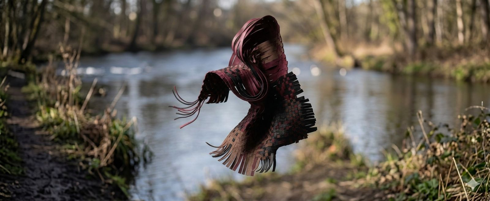
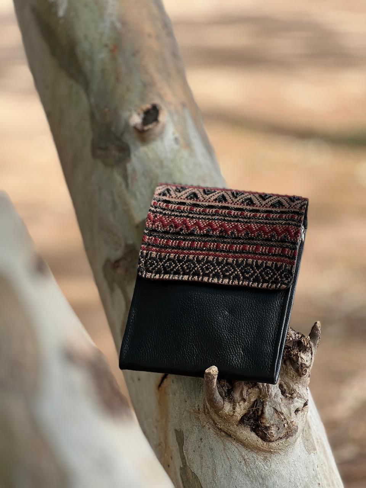
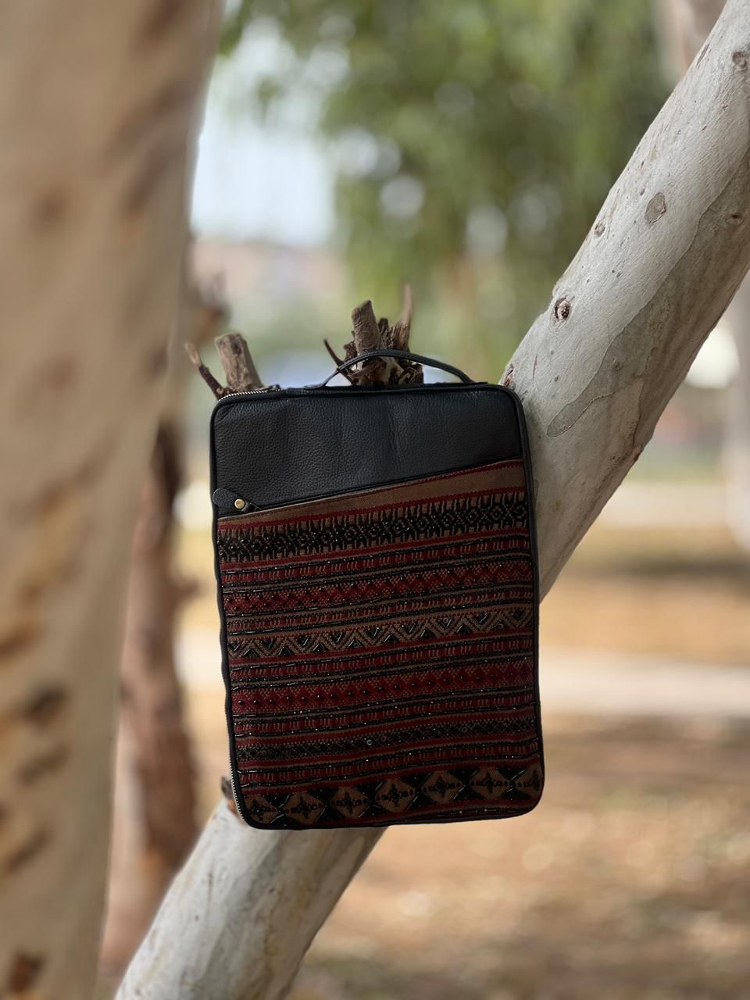
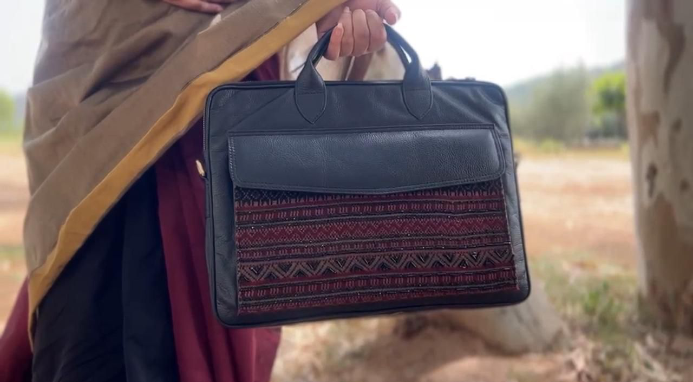

Indus Impressions is a Islamabad-based fashion label founded by six fashion design students united by a shared vision: to create garments and accessories that do more than look beautiful — they speak.
Our collections of handcrafted bags and sarees draw on the rich textile traditions of Pakistan — the weavers of Sindh, the leather workers of the Punjab, the artisans whose craft has been passed down through generations. We bring their work to the foreground and give it a contemporary voice rooted in purpose.
Every collection we create is a chapter in a story about the Indus River — its beauty, its fragility, and the life it sustains.
As our project required the incorporation of an indigenous Pakistani craft, we selected weaving as the primary technique in order to promote traditional artisanship and create employment opportunities for local craftsmen. Weaving is one of Pakistan's oldest textile traditions and is widely practised in regions such as Sindh, Punjab, and Swat, using techniques including handloom weaving, khaddar weaving, and jacquard weaving.
For this collection, we incorporated a traditional Swati geometric handloom weaving technique inspired by regional textile patterns and heritage craftsmanship. The intricate handmade process reflects the richness of Pakistan's textile culture and highlights the importance of preserving local crafts in contemporary fashion design.
Due to the complexity and precision involved in the weaving process, it takes approximately fifteen days to complete one woven shawl — demonstrating the time, skill, and dedication required by our artisans. Each panel on our bags carries that investment of craft.
"Our project is based on the theme of the Indus Valley dolphin and soil erosion — highlighting the environmental challenges affecting Pakistan's natural heritage and ecosystem."
The concept aims to raise awareness about the endangered Indus dolphin and the harmful impact of soil erosion on landscapes, biodiversity, and surrounding communities. These environmental concerns have been translated into a contemporary fashion and textile collection that blends sustainability, creativity, and cultural storytelling. The overall theme reflects the deep connection between nature, environmental preservation, and Pakistani identity — while promoting responsible and meaningful design practices through fashion.
Through handwoven textiles, organic textures, and traditional patterns, the project emphasises sustainability, conservation, and slow fashion — addressing contemporary environmental issues like climate change and soil erosion along the Indus.
The bags were created using upcycled materials — giving old leather a new purpose and reducing textile waste. Each bag carries a hand-woven Swati geometric panel, honouring artisan craft while embedding sustainability into every stitch.
The sarees focus on detailed woven textile surfaces, highlighting traditional artisan techniques and handloom craftsmanship. Each saree is a study in slow fashion — made entirely by hand, with no shortcuts and no machines.
The Indus River dolphin is one of the world's most endangered freshwater dolphins, found mainly in the Indus River system of Pakistan. Its population is severely affected by human activities and environmental changes. Major threats include water pollution, construction of dams and barrages, reduced river flow, and habitat fragmentation. These factors restrict their movement, isolate populations, and limit access to food sources.
Additionally, soil erosion and sedimentation alter river ecosystems, further disturbing their natural habitat. As a result, the species continues to face a high risk of decline, making conservation efforts essential for its survival.
The project also addresses soil erosion, which significantly impacts landscapes, agriculture, and river ecosystems in Pakistan. It leads to loss of fertile land, increased sediment in rivers, and disruption of aquatic life — including the Indus River dolphin. Together, these environmental issues highlight the fragile balance between nature and human activity.
The selected colour palette includes black, maroon, dull gold, and beige — forming the visual foundation of the collection. Each colour was chosen deliberately to represent a layer of the project's environmental and cultural meaning.
Environmental Damage
Represents environmental damage and the seriousness of ecological issues — highlighting concerns such as soil erosion and habitat loss.
Cultural Richness
Symbolises cultural richness, strength, and depth — connecting the collection to Pakistan's heritage and identity.
Tradition & Craft
Reflects tradition, craftsmanship, and cultural heritage — emphasising the value of indigenous artisan skills.
Earth & Soil
Represents soil, natural earth tones, and sustainability — directly linking the palette to the environmental theme.
Together, these colours create a sophisticated and cohesive visual identity that combines environmental awareness with cultural storytelling in a contemporary design context.
Six fashion design students. One shared conviction. Together they research, design, sample, plan, document, and communicate the story of Indus Impressions — each bringing a distinct lens to a project that is deeply personal to all of them.
Hello, I am Irsia Rosheen, Social Media and Marketing Head at Indus Impressions — a passionate fashion design student with a creative eye and a strong love for storytelling through style. I combine creativity with strategy to build engaging and meaningful digital experiences.
Indus Impressions is a very personal project to me. The theme and message we are working on hold deep importance and highlight issues that truly need more awareness among us. Being part of something that not only showcases creativity but also sparks conversation and consciousness makes this journey even more special.
I'm deeply interested in fashion innovation, branding, and visual communication. Whether it's designing, curating content, or leading campaigns, I enjoy turning ideas into impactful expressions and connecting with audiences in authentic ways. Always eager to learn, grow, and explore new perspectives in both fashion and the digital world.
Hello, I am Subhana Irshad Rao, Design Head at Indus Impressions — a dedicated fashion design student driven by creativity, detail, and the power of visual expression. As the Design Head, I focus on transforming concepts into compelling designs that reflect both aesthetic value and meaningful narratives.
Indus Impressions is especially close to me, as the theme we are working on carries a strong message that deserves greater awareness. Through design, I aim to communicate this message in a way that resonates, inspires, and leaves a lasting impact.
I am passionate about design development, textile exploration, and crafting pieces that tell a story. From ideation to execution, I enjoy pushing creative boundaries and bringing thoughtful concepts to life while continuously evolving as a designer.
Hello, I am Minahil Sajid, Concept and Visual Researcher at Indus Impressions — a thoughtful fashion design student with a keen eye for detail and a deep interest in storytelling through research and visuals. In my role, I focus on developing concepts and gathering visual inspiration that shape the direction and identity of our work.
Indus Impressions holds great importance to me, as the theme we are exploring carries a powerful message that needs more awareness. Through research and visual exploration, I aim to build a strong foundation that allows our ideas to be both meaningful and impactful.
I am passionate about concept development, trend analysis, and visual storytelling. I enjoy connecting ideas, cultures, and aesthetics to create narratives that are not only visually engaging but also thought-provoking.
Hello, I am Ukasha Mustafa, Sampler at Indus Impressions — a dedicated fashion design student with a strong focus on craftsmanship and precision. In my role, I bring designs to life by carefully developing samples that translate concepts into tangible forms.
Indus Impressions is very meaningful to me, as the theme we are working on carries an important message that deserves more awareness. Being able to contribute through hands-on work and detailing makes this experience both impactful and rewarding.
I am passionate about garment construction, fabric handling, and perfecting the finer details of design. I enjoy the process of turning ideas into well-executed pieces, ensuring quality and accuracy in every step.
Hello, I am Safiya Khan, Project Planner and Coordinator at Indus Impressions — a focused and organized fashion design student with a strong ability to manage workflows and bring structure to creative processes. In my role, I ensure that ideas are executed smoothly by coordinating between team members and keeping every stage of the project aligned.
Indus Impressions is very close to me, as the theme we are working on carries a meaningful message that deserves more awareness. Being part of a project that not only highlights creativity but also promotes understanding makes my role even more significant.
I am passionate about planning, team coordination, and maintaining balance between creativity and organization. I enjoy turning ideas into well-managed outcomes and ensuring that every part of the project comes together seamlessly.
Hello, I am Mehr Jamil, Report Lead at Indus Impressions — a detail-oriented fashion design student with a strong focus on documentation and communication. In my role, I compile, organize, and present our work in a clear and structured way, ensuring that every stage of the project is thoughtfully recorded.
Indus Impressions is very meaningful to me, as the theme we are working on highlights an important message that needs more awareness. Being responsible for documenting this journey allows me to capture not just the outcomes, but the purpose and impact behind our work.
I am passionate about research documentation, content structuring, and visual presentation. I enjoy transforming ideas and processes into well-crafted reports that reflect both creativity and clarity.
Indus Impressions is made possible by the skilled artisans, weavers, and leather workers whose craft forms the foundation of everything we create. Their expertise — often passed down across generations — is what gives our pieces their soul. We are proud to work alongside them and to make their stories part of ours.
Our sarees are woven on handlooms by master weavers rooted in the textile traditions of Sindh. Using techniques refined over centuries — ajrak block-printing, intricate embroidery, natural dyeing — they produce fabric that carries the memory of the river in every thread. Their work is slow, deliberate, and irreplaceable.
Skilled artisans embroider the watercolour motifs of the Bhulan and Indus flora onto our sarees and bag linings by hand. Each motif is unique — a small portrait of the river rendered in thread. These artisans, many of them women in Sindhi communities, bring an intimacy to our pieces that no machine could replicate.
Our bags are crafted by leather workers with generations of expertise in hand-stitching, tooling, and finishing. They work with full-grain leather sourced responsibly, shaping totes, clutches, and satchels that are built to last. Every seam, every edge, and every stitch is a mark of a craftsperson who takes profound pride in their work.